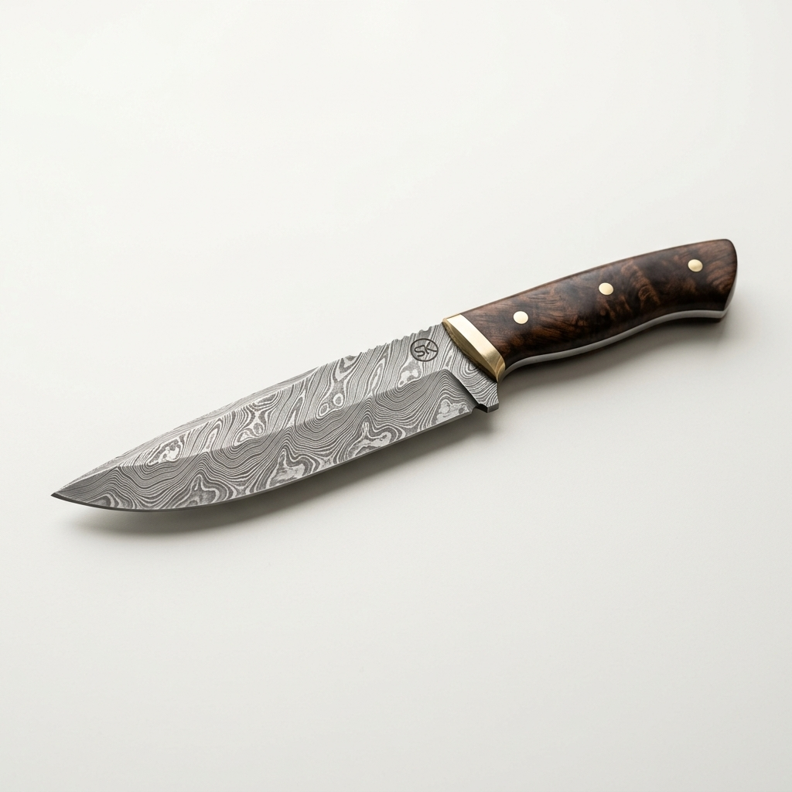
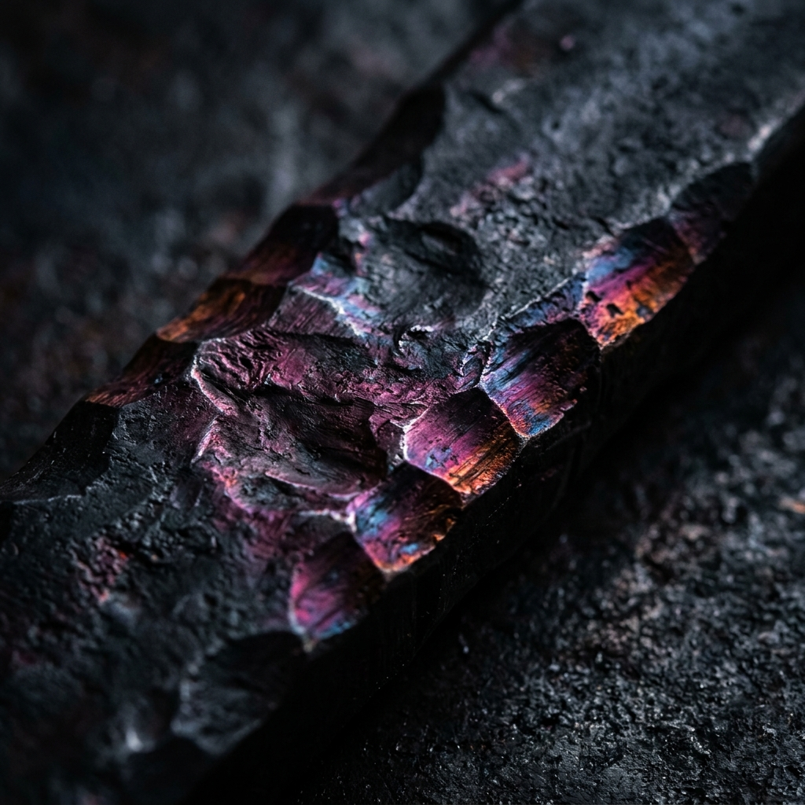

The Edge of
32 Years.
1994년부터 시작된 날의 고찰.
금속이 견뎌낸 열기와 작가의 손끝이 만나는 예리한 경계.
이 섹션은 정득묵 작가의 30년 업력을 '뮤지엄 퀄리티'와 '대장간의 날것'이라는 두 가지 시각으로 조명합니다. 그리드 레이아웃은 칼날의 정교함을 상징하며, 각 칸에 마우스를 올리면 작품의 상세 제원과 제작 과정의 거친 질감이 교차하여 나타납니다.

경계에 대한 고찰 (2022)
Heat Treatment: 1050°C / Handle: Fossilized Oak
망치와 모루 사이의
반복되는 파동은
금속에 영혼을 불어넣는다.
"날은 세우는 것이
아니라,
찾아내는 것이다."

[이미지 영역 18] / 30 Years Archive Overview